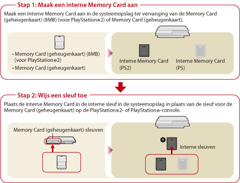

Game > PlayStation®2 / PlayStation®-software spelen > Opgeslagen data gebruiken
Opgeslagen data gebruiken
Opgeslagen data voor PlayStation®2- of PlayStation®-software worden opgeslagen op interne Memory Cards die in de systeemopslag werden aangemaakt. Interne Memory Cards kunnen worden gebruikt door ze aan sleuven toe te wijzen nadat ze werden aangemaakt. De data worden weergegeven onder  (Diensten voor Memory Card).
(Diensten voor Memory Card).
Let op
- Sommige PlayStation®2- of PlayStation®-softwaretitels kunnen anders werken op het PS3™-systeem dan op PlayStation®2- of PlayStation®-systemen of werken soms niet goed op het PS3™-systeem.
- Discs in PlayStation®2-formaat kunnen niet afgespeeld worden op sommige PS3™-systemen. Voor meer informatie kunt u [Types afspeelbare discs] raadplegen, de SIE-website voor uw regio bezoeken of de documentatie bekijken die met uw PS3™-systeem meegeleverd werd.

Een interne Memory Card aanmaken
1. |
Selecteer |
|---|---|
2. |
Selecteer |
 (Game) >
(Game) >  (Maak een nieuwe interne Memory Card).
(Maak een nieuwe interne Memory Card).Opmerking
Namen of pictogrammen van interne Memory Cards kunnen gewijzigd worden onder [Informatie] in het optiesmenu.
Een sleuf toewijzen
1. |
Selecteer |
|---|---|
2. |
Selecteer de interne Memory Card die u wilt gebruiken en druk vervolgens op de |
3. |
Selecteer [Sleuven toewijzen]. |
 -toets.
-toets.Opmerkingen
- Afhankelijk van de software zijn de sleuven mogelijk vooraf toegewezen. Voor meer informatie verwijzen wij u naar de instructies die worden meegeleverd bij de software.
- U kunt sleuven toewijzen tijdens het spelen. Druk op de PS-toets op de draadloze controller en selecteer vervolgens [Sleuven toewijzen] op het weergegeven scherm.